Thesis Seminar
Sofía Fernández Lozano
Integrated Program in Neuroscience
Hippocampal-to-Ventricle Ratio
in Alzheimer's Disease:
Computation, Validation, and Characterization
Background and Related Work
The hippocampus

- Located in medial temporal lobe
-
Critical for memory and spatial navigation
Andersen et al., 2009 - Vulnerable to aging and pathology
Hippocampal atrophy across aging
- Gradual volume loss during normal aging Fjell et al., 2010
- Accelerated atrophy → pathological aging Jack et al., 2018
Alzheimer's disease

Biological affliction precedes symptoms by decades

Structural MRI in AD

- Non-invasive biomarkers for AD progression
-
HC volume reduction:
early marker of disease -
Ventricular enlargement:
generalized atrophy & disease progression
Measurement challenges
- Segmentation and methodological variability
- Influence of intracranial volume (ICV)
- Methodological bias in sex differences
Sanchis-segura, et al., 2019
Are all ICV-adjustment methods the same?
- ICV adjustment methods → number, size and direction of sex differences in GM volume; Sanchis-segura, et al., 2019
-
Sex differences on HC volume changes direction
- Proportions method
Are all ICV-adjustment methods the same?
- ICV adjustment methods → number, size and direction of sex differences in GM volume; Sanchis-segura, et al., 2019
-
Sex differences on HC volume disappears entirely
- Covariate regression
- Power-corrected proportion
- Residuals adjustment
- Subject matching
Normative modeling
- Helps interpret individual atrophy in reference to population norms
- Captures nonlinear and age-related trends
- Enables Z-scores relative to age and sex norms
Hippocampal normative values

Limitations of normative Z-scores
- Z-scores rely on accurate, unbiased population norms
- Can still reflect residual confounds (e.g., ICV, sex)
- May not generalize across samples or segmentation pipelines
Hippocampal-to-Ventricle Ratio

{kind=link}
- Captures relative MTL integrity accounting for surrounding atrophy
- Reduces dependence on head-size normalization
- Enhances sensitivity to age-related neurodegeneration
Structural Equation Modeling (SEM)
-
Cognitive function:
multidimensional & highly intercorrelated - Simple regression may fail to account for these complexities
- (SEM) allows:
- Latent variable modeling
- Simultaneous estimations
Research Problem
& Aim
Research Problem
- The hippocampus (HC) is a widely used structural MRI biomarker for aging and neurodegeneration
- Yet, HC volume shows high variability even in healthy populations
- Sex differences in HC are debated, often confounded by head-size normalization strategy
- Interpretation of HC volume alone can be ambiguous across the lifespan or clinical groups
Research Problem
- The hippocampal-to-ventricle ratio (HVR) was proposed as an alternative biomarker
- It was proposed on a relatively small sample of healthy older adults
- It's manual calculation prohibits its use on large samples
Overall Research Aim
To ease, validate, and characterize the use of hippocampal and ventricular biomarkers—particularly the hippocampal-to-ventricle ratio (HVR)—for improved understanding of sex differences and cognitive decline in both aging and neurodegeneration.
Objectives
& Hypotheses
General Objectives
- Develop tools to ease the application and quality control of the segmentations needed for the calculation of the HVR
- Validate and expand the preliminary results of HVR on a larger and clinical sample
- Build normative models of HVR for its use in the clinic
- Explore and compare HVR with other ways of controlling for head-size in medio-temporal volumetrics
- Test whether including ventricular data improves models linking brain structure to cognitive performance
Hypotheses
- The process of data curation and inspection can be made faster and more robust with the use of collaborative software
- Novel CNN-based segmentations yield more accurate and robust HVR estimates than older methods
- HVR shows stronger associations with aging and cognition than conventional HC volume
- Normative models using HVR are more sensitive to age effects than those using conventional HC volume
- Models including both HC and ventricular volumes better predict cognition than those with HC alone
Chapter 1
Qrater:
a collaborative and centralized imaging quality control web-based application
Why we needed it?
- QC was a bottleneck: thousands of MRI segmentations needed checking
- Existing tools were slow, non-collaborative, and hard to scale
- We needed a fast tool to view and rate images across raters
So I built Qrater
Qrater
- Web-based. Works with any 2D image
- Multiple users can work on the same data simultaneously
- Feature-rich:
- Brightness/contrast controls
- Zoom
- Keyboard shortcuts
- Comments
Qrater
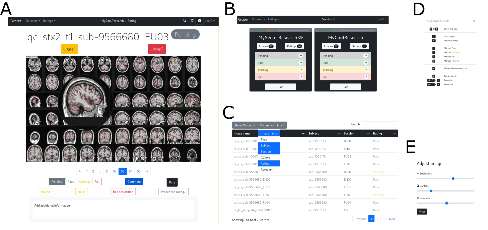
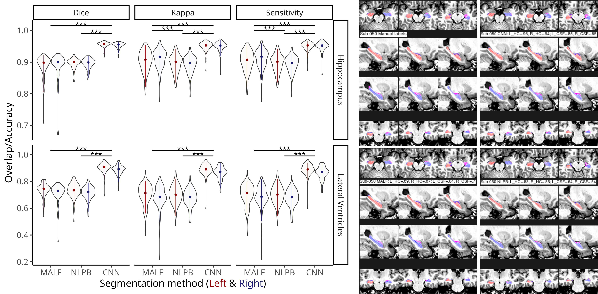
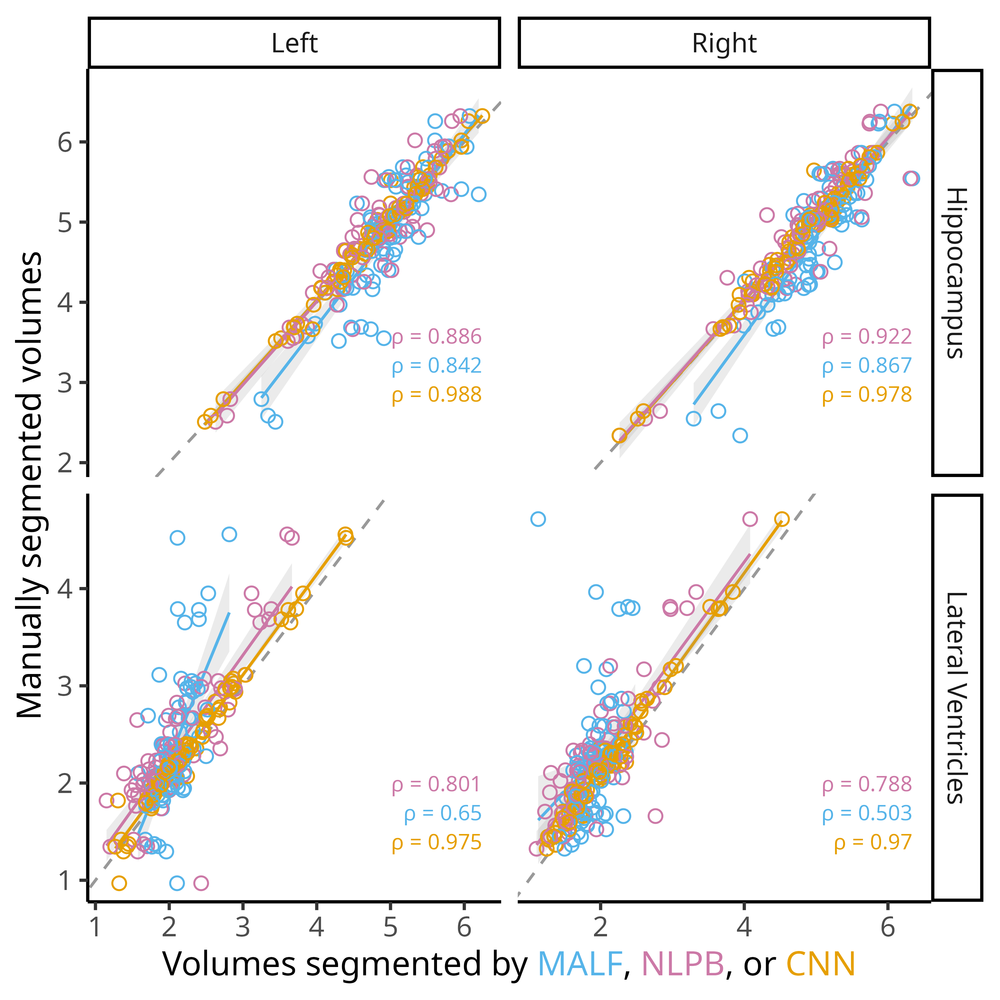
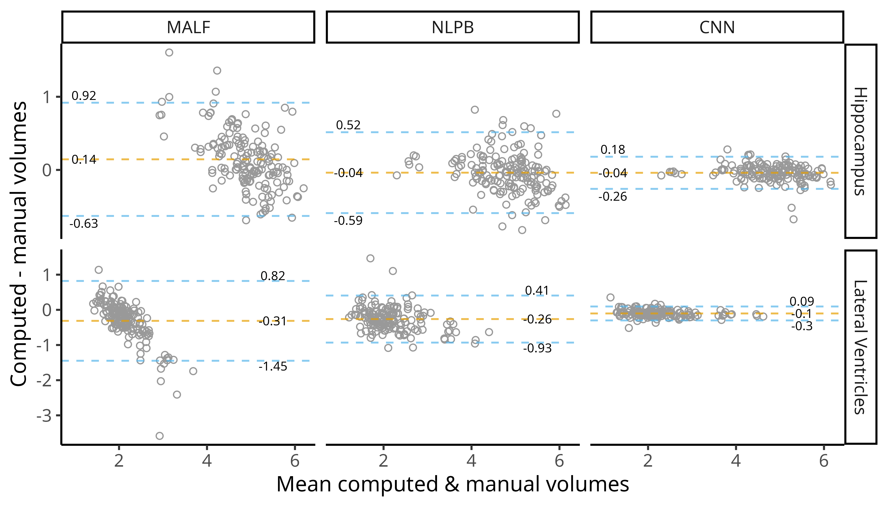
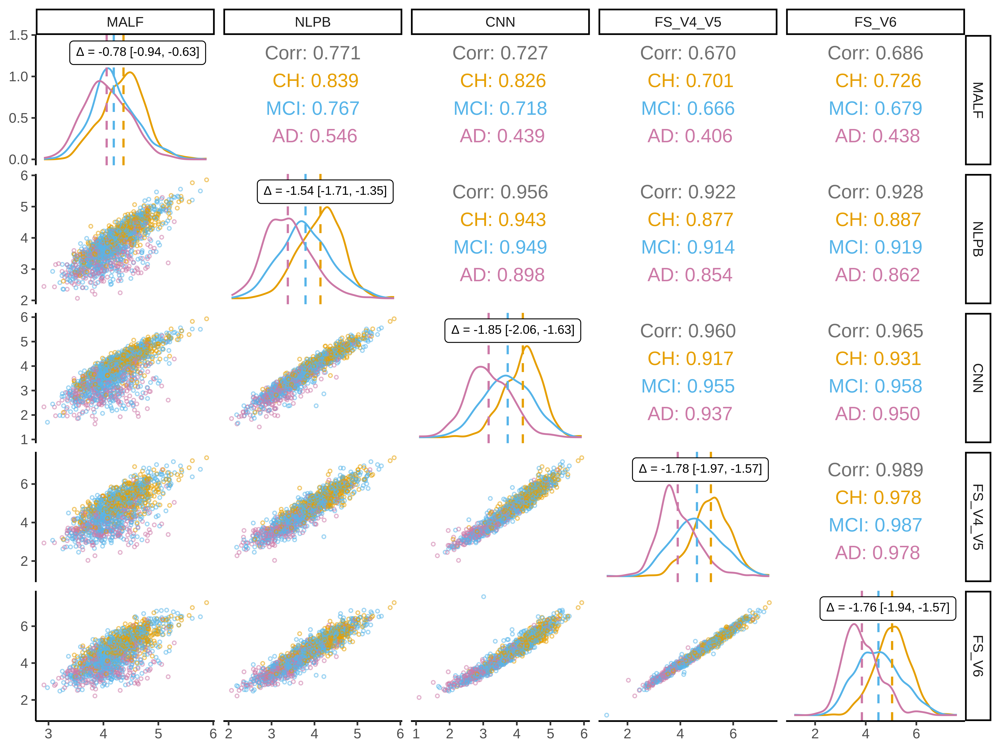
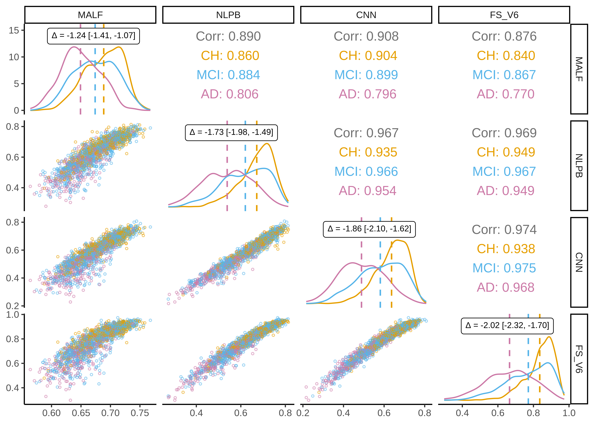
Correlations:

Complete sample
Matched sample
Benchmark Tests
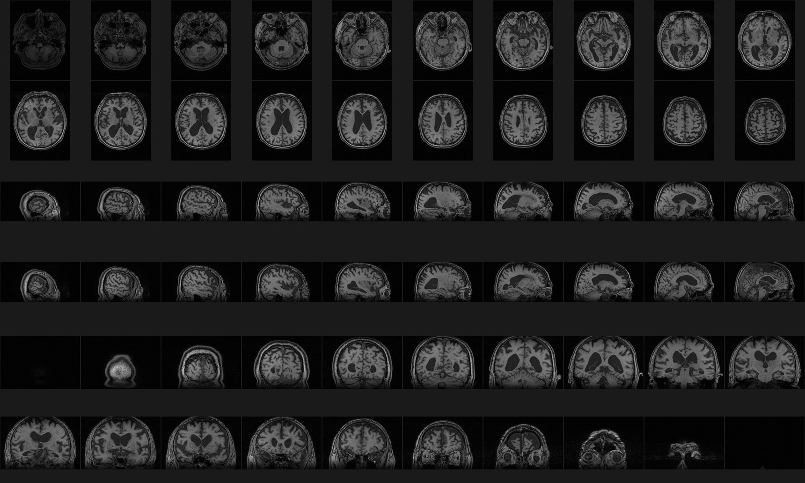
- Raw unprocessed T1w brain images
- T1w brain images linearly registered to standard template
- Output of experimental skull extraction pipeline
Benchmark Tests
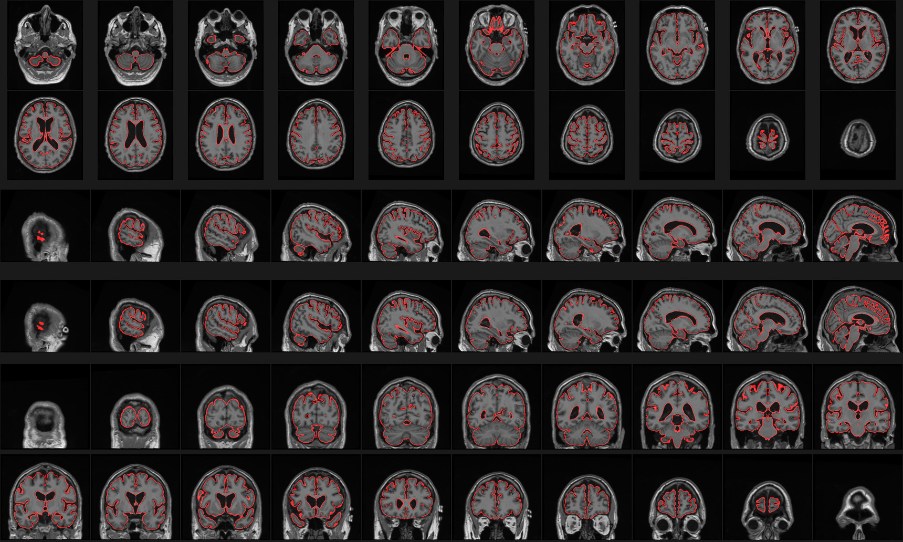
- Raw unprocessed T1w brain images
- T1w brain images linearly registered to standard template
- Output of experimental skull extraction pipeline
Benchmark Tests
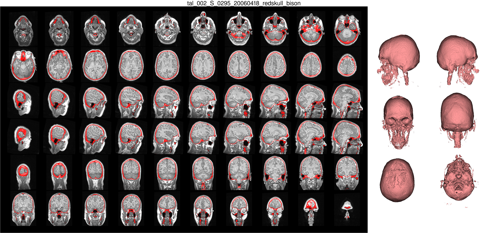
- Raw unprocessed T1w brain images
- T1w brain images linearly registered to standard template
- Output of experimental skull extraction pipeline
Does it work?
- Collaboration features are useful for training
- Faster QC
Does it work?
- Collaboration features are useful for training
Trainees agreement with experienced rater kept increasing throughout the project:
59-86% (mean 77%) on the first exercise; 73-92% (mean 84.75%) on the second - Faster QC
Does it work?
- Collaboration features are useful for training
- Faster QC
Does it work?
- Collaboration features are useful for training
- Faster QC
QC on linear registration: 3x faster for trainees, 2x faster for experts
QC on skull segmentation: from 1 min/image -> 3 sec/image
Chapter 1 Summary — Qrater in Use
- Build to solve a bottleneck in large-scale neuroimaging QC
- Adopted beyond this project and my own use
Chapter 1 Summary — Qrater in Use
- Build to solve a bottleneck in large-scale neuroimaging QC
- Enables faster and more consisten image rating
- Versatile enough for raw MRI, registration, segmentation tasks, and many more
- Adopted beyond this project and my own use
Chapter 1 Summary — Qrater in Use
- Build to solve a bottleneck in large-scale neuroimaging QC
- Adopted beyond this project and my own use
- Available on DockerHub and used by other labs
- 250K+ images loaded and rated by our team
Chapter 2
Enhanced Detection of Age-Related and Cognitive Decline Using Automated HVR in AD patients
From Potential to Practice
- HVR had shown promise, in a small healthy sample
- A way to compute it efficiently, reliably, and at scale
- Know if it held up in clinical populations
Automatic segmentation
- Available labels from: Schoemaker, et al. ; N = 80
- Train different segmentation techniques
- Validate on an out-of-sample clinical dataset
- Compare with widely used FreeSurfer
Automatic segmentation
- Available labels from: Schoemaker, et al. ; N = 80
- Train different segmentation techniques
- Multi-atlas label fusion; Collins & Pruessner, 2010;
- Non-local Patch-based segmentation; Coupé, et al., 2011
- Convolutional Neural Network; Fonov, et al., 2022
- Validate on an out-of-sample clinical dataset
- Compare with widely used FreeSurfer
Automatic segmentation
- Available labels from: Schoemaker, et al. ; N = 80
- Train different segmentation techniques
- Validate on an out-of-sample clinical dataset
- The CNN network was also validated on the segmentation of independet dataset.
- 60 manually segmented ADNI images: 20/20/20 CH, MCI & AD.
- Compare with widely used FreeSurfer
Automatic segmentation
- Available labels from: Schoemaker, et al. ; N = 80
- Train different segmentation techniques
- Validate on an out-of-sample clinical dataset
- Compare with widely used FreeSurfer
- FreeSurfer v.4.3, v.5.1, and v.6.0*; Fischl, et al., 2002
Automatic segmentation performance
Manual-Computed volume relationship
Out-of-sample validation
- High accuracy across clinical groups:
0.88-0.92 on Dice, Kappa, and Sensitivity; 0.99-1.0 on Accuracy and Specificity. - Strong Manual-Computed correlations:
0.94 for CH; 0.93-0.96 for MCI; 0.9-0.96 for AD. - Minimal bias in volume estimates across the groups
Application on ADNI data
Demographics
Number of failures methods
Similarity & effect sizes: Hippocampus
Similarity & effect sizes: HVR
Correlations:
Age,
RAVLT
& ADAS13
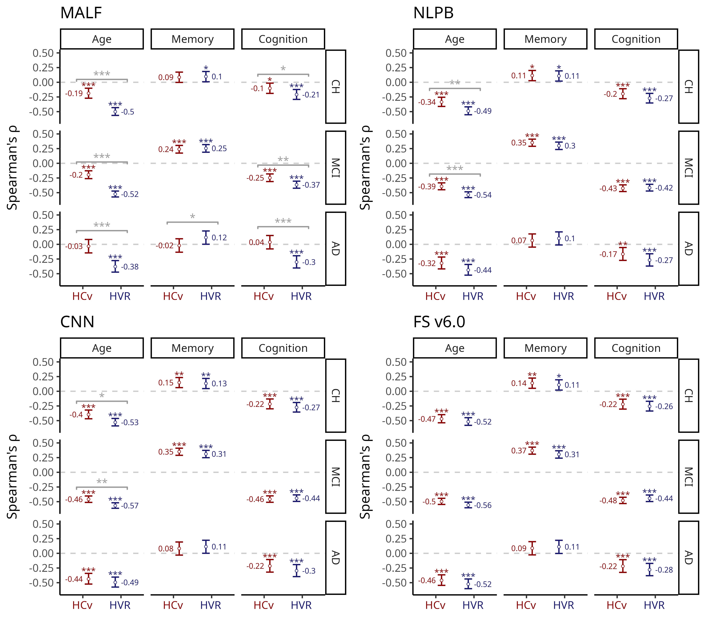
Chapter 2 Summary — HVR Validated
- HVR can be computed automatically and reliably:
- HVR caputres clinically relevant changes:
Chapter 2 Summary — HVR Validated
- HVR can be computed automatically and reliably:
- CNN-based segmentations were accurate (Dice ≈ 0.94) and robust.
- Dockerized tool enables fast, reproducible HVR estimation in large datasets.
- HVR caputres clinically relevant changes:
Chapter 2 Summary — HVR Validated
- HVR can be computed automatically and reliably:
- HVR caputres clinically relevant changes:
- Efect sizes for CH-AD were stronger than HC volume alone.
- More sensitive for aging effects across clinical groups.
- Better associations with cognition (ADAS13 & Memory), particularly on lower quality segmentations.
Chapter 3
Sex, Head Size, and Brain Structure: Modeling Cognition in Aging Adults
Scaling up what we found
- ADNI: HVR showed stronger associations with age
- Our hypothesis:
HVR's sensitivity to age-related neurodegeneration is driven by its ventricular component - So we decided to explore this in a much larger sample
UK Biobank
Non-linear Aging Trajectories
HC, HVR, and lateral ventricles
- We used GAMLSS to model the non-linear aging trajectories of HC, HVR and the temporal horns of the lateral ventricles
- From these models, we derived:
- Z-scores to assess individual deviations.
- Normative tables across the later lifespan.
HC, HVR, and lateral ventricles
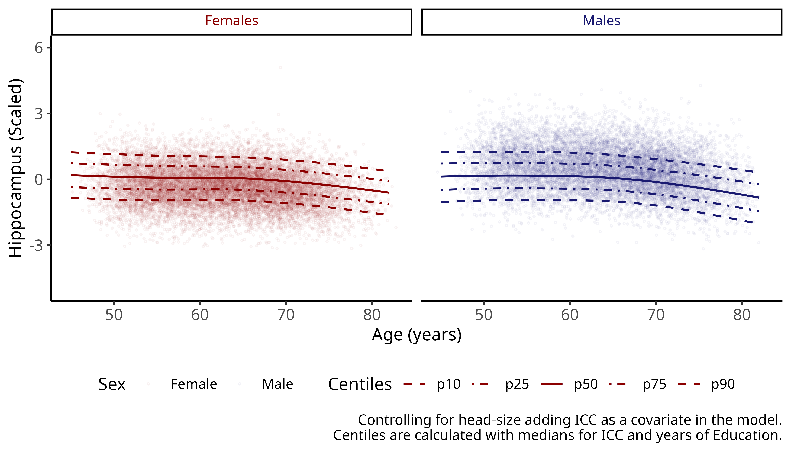HC, HVR, and lateral ventricles
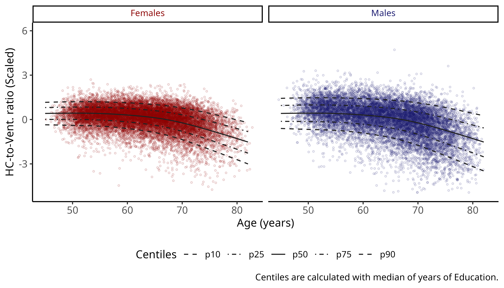HC, HVR, and lateral ventricles
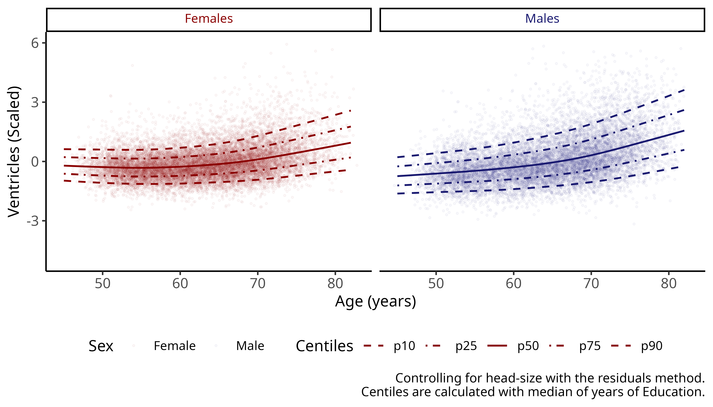Age-related patterns vary by marker
- HC: modest age related decline; roughly linear
- Lateral ventricles: clear increase with age
-
HVR:narrower percentiles in early age
Captures imabalance between HC loss and ventricular expansion
Age-related patterns vary by sex
- Residual sex effects remain even after covariate adjustment
- Males consistently show larger ventricular volumes, with wider centiles
- Males have more pronounced divergence in both lateral ventricles & HVR
Are sex differences real or just a by-product of head-size?
- Head-size correction impacts the direction and size of sex differences
- It's unclear if these are true biological differences or artifacts of brain-size
- To assess this, we compared Male-Female effect sizes in a matched subsample
Different ways of doing the same thing
- As a covariate
- Proportion
- Residuals
- Hippocampal-to-Ventricle Ratio
Different ways of doing the same thing
- As a covariate
- Using raw volumes and adding TIV as a covariate in the model.
- Proportion
- Residuals
- Hippocampal-to-Ventricle Ratio
Different ways of doing the same thing
- As a covariate
- Proportion
- Assumes a proportional relationship between TIV and the volume of interest.
- $VOL_{adj} = VOL / TIV$
- Residuals
- Hippocampal-to-Ventricle Ratio
Different ways of doing the same thing
- As a covariate
- Proportion
- Residuals
- Removes an implicitly assumed linear TIV-VOI relationship:
- $VOL_{adj} = VOL - b * (TIV - TIV_{avg})$
- $b$ is the slope of the $VOL ~ TIV$ regression line, and $TIV_{avg}$ is the mean of the TIV of the control group.
- Hippocampal-to-Ventricle Ratio
Different ways of doing the same thing
- As a covariate
- Proportion
- Residuals
- Hippocampal-to-Ventricle Ratio
- HVR quantifies the proportion of hippocampal volume relative to the combined volume of the hippocampus and temporal horns of the lateral ventricles.
- ${HVR} = HC / (HC + LV)$
- In this project, we are calculating HVR using HC & LV volumes adjusted with the residuals method.
Matched subsample
Complete sample
Matched sample
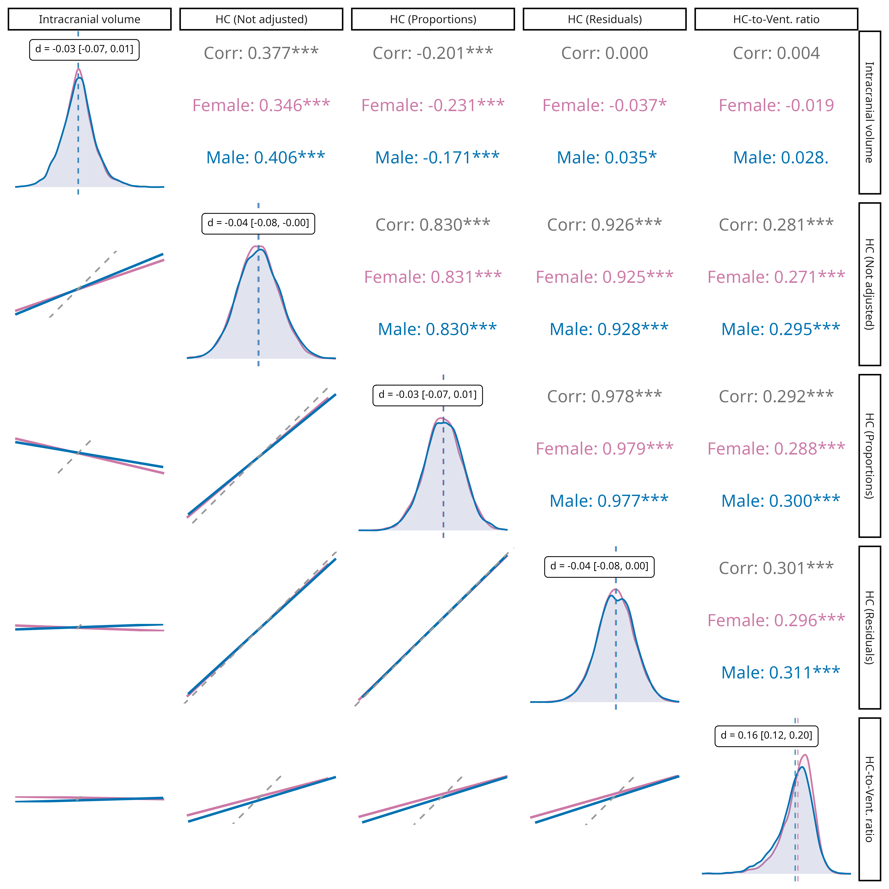
Complete sample
(Ventricles)
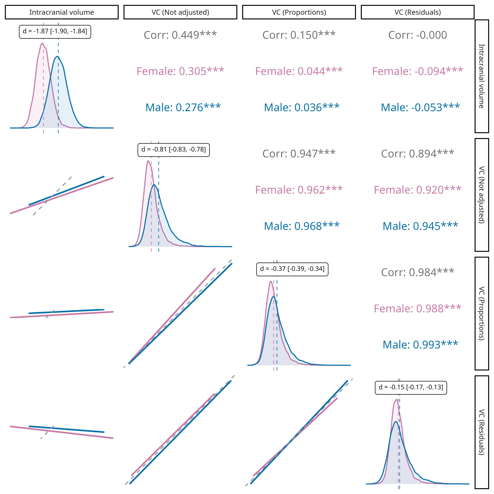
Matched sample
(Ventricles)
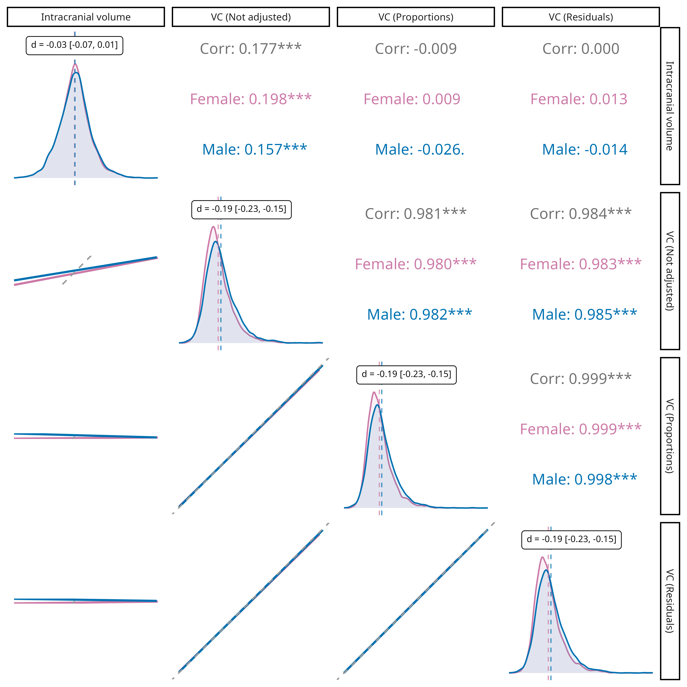
Persistent sex differences
- Matching males and females on ICV minimized volume differences in raw HC
- Proportional and residual adjustments reduced or reversed sex effects
- HVR consistently preserved modest but meaningful sex differences
- Ventricular volume retained sex effects, independently of adjustment
- Suggests that some sex differences in brain structure are not explained by head size.
- HVR may capture these residual biological differences more faithfully than conventional corrections
What about cognition?
- We used the derived Z-scores to quantify the individual deviations from age-normed HC and HVR trajectories
- We tested how HC & HVR related differently to cognition
Structural Equation Modeling
- Measurement model
- Cognitive domains built as latent variables
- Memory, Executive Function & Processing Speed
- Structural model
- Endogenous variables: Cognitive domains
- Exogenous variables: HC or HVR Z-scores
Measurement model
Structural model
What lies beyond the Z-scores?
- Z-scores showed modest, but significant associations with cognition
- HVR associations were consistently lower in magnitude
- Z-scores inherently control for covariates; which may mask relevant variance
- We decided to explore how covariates & head-size adjustment affected the MTL-cognition associations
Structural Equation Modeling
- Measurement model
- Cognitive domains as latent variables
- Structural model
- Endogenous variables: Cognitive domains
- Exogenous variables:
- Hippocampal & Ventricular volumetrics
- TIV, Age, Sex, & Education as covariates
Measurement model
Structural model
Memory
Structural model
Memory
Structural model
Memory
Structural model
Executive Function
Structural model
Executive Function
Structural model
Executive Function
Structural model
Processing Speed
Structural model
Processing Speed
Structural model Speed
Processing Speed
Models' Fit
SEM: Summary of findings
- All models were structurally identical—only HC input differed
- Proportions-adjusted models were the less reliable
- HVR consistently showed stronger associations with cognition
- Adding TIV as a covariate flipped the sex-effects
- AIC/BIC favoured the full models (HC + TIV + LV)
- CFI/TLI favoured HVR models.
Chapter 3 Summary — Structure, Adjustment & Interpretation
- Normative modeling showed HVR & LV better captured age-related structural changes than HC
- Matched-sample results confirmed that HVR preserves sex effects not explained by head-size
- Z-scores analyses showed stronger cognitive associations for HC; yet they were largely driven by head-size
- SEM comparisons showed head-size correction strategy alters interpretability
- Across analyses, HVR proved sensitive to age, sex-effects, structurally meaningful and less confounded by head-size.
Original Contributions
Methodological Contributions
- Qrater: Open-source web platform for collaborative QC.
- HVR Docker Tool: User-friendly container for the automatic segmentation and calculation of the HVR.
- Normative Percentile Tables: Generated and released normative percentile tables for HC, HVR and lateral ventricular volumes.
Scientific Findings
- HVR validation: validated HVR as a robust, aging-sensitive biomarker in AD/MCI/Healthy aging cohorts.
- Comparative evaluation of head-size correction strategies: demonstrated its effects in cognitive modeling and sex-effects
- Evidence for residual sex effects: showed that sex differences persist in HVR aven after TIV-matching.
- Found that Z-scores derived from normative models supress meaningful variance and are not optimal for cognitive associations.
Thesis Completion Timeline
- Chapter 1: Introduction (3–5pp) – Not started → ~3–4 days
- Chapter 2: Background (25–35pp) – 15–20% → ~2–2.5 weeks
- Chapter 3: Qrater – Published (formatting only) → ~2–3 days
- Chapter 4: HVR Validation – Submitted (revisions) → ~5–14 days
- Chapter 5: Normative Models + Sex Effects – In progress → ~2.5–3 weeks
- Chapter 6: General Discussion – Not started → ~3 weeks
- Formatting and front matter → ~1 week
➡ Expected submission: End of August, 2025